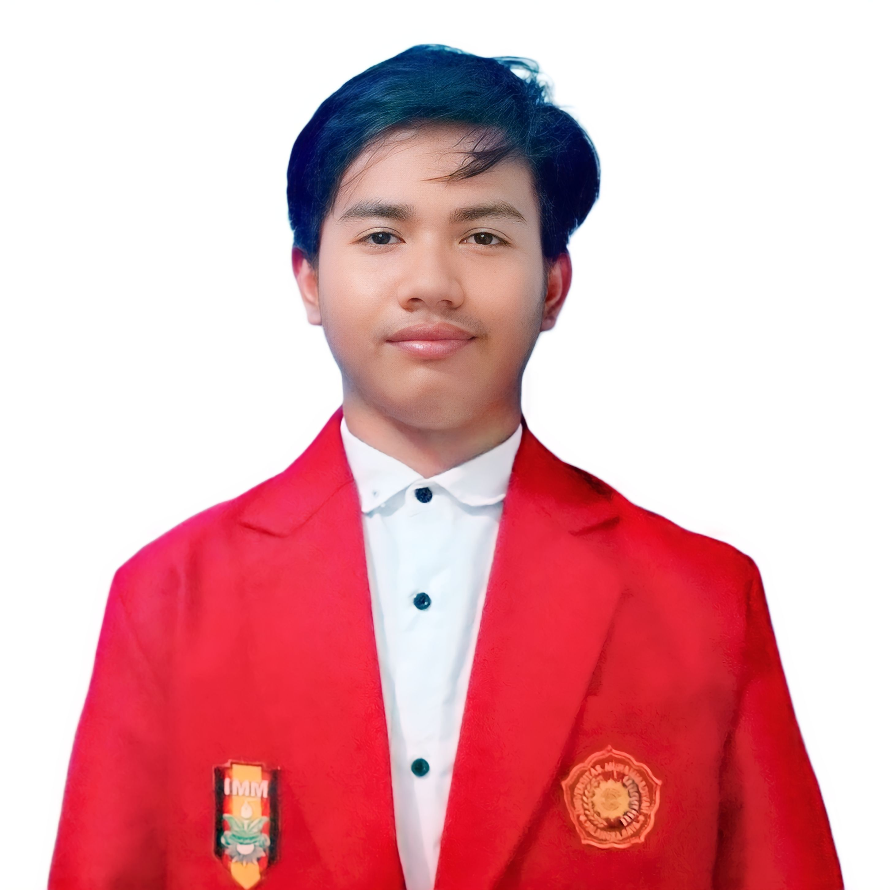

Ahmad Jayadi Putra
NIM: 23.53.027125Program Studi: Ilmu Komputer - Fakultas Bisnis dan Informatika, Universitas Muhammadiyah Palangkaraya
Halo! Selamat datang di website statis portofolio mata kuliah Komputasi Awan. Situs ini dibangun untuk mendemonstrasikan proses publikasi aplikasi web menggunakan layanan cloud hosting GitHub Pages, sekaligus mendokumentasikan ringkasan materi serta hasil tugas yang sebelumnya sudah saya kerjakan.
Pelajari Materi CloudTentang Proyek Deployment Ini
Website ini terdiri dari tiga halaman utama yang saling terhubung melalui navigasi di atas:
1. Beranda
Menampilkan identitas mahasiswa, pass foto, serta gambaran singkat tujuan pembuatan situs web statis.
2. Materi Komputasi Awan
Membahas konsep dasar komputasi awan, model layanan SaaS, PaaS, IaaS, beserta manfaat dan risikonya.
3. Portofolio Tugas
Berisi dokumentasi dan tautan langsung menuju hasil pengerjaan Tugas 1 dan Tugas 2 Komputasi Awan.